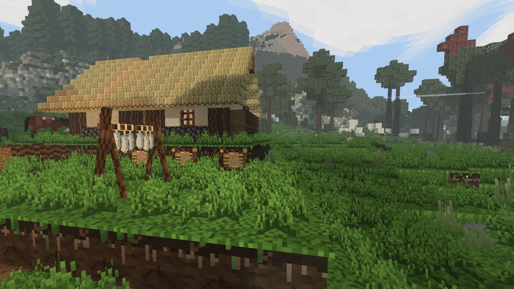

Полевые заметки
Руководство игрока по Primitive: от каменного века до железного, в одиночку или на небольшом сервере.

Вы просыпаетесь ни с чем, голыми руками разбиваете камень и дальше идёте через кремень, глину, медь, бронзу и железо. Каждый шаг — повод куда-то пойти: вы уходите с луга, потому что руда в холмах, и возвращаетесь, потому что дома ваше поле и ваш огонь.
Это руководство написано по коду самой игры, а картинки сняты в игре. Если руководство и игра расходятся, верьте игре.
- Первые шагиНовый мир, первый камень, кремень, инструменты, огонь, вода и еда.
- ПутьСемь веков от голых рук до железа и куда идти за каждым.
- Ремесло и мастерскиеКнига рецептов, очаги и жар, горн, земляная печь.
- ЗемледелиеСемена, мотыга, вода, заморозки, зола и хлеб.
- Выживание и телоГолод, жажда, холод, плавание, мокрая шерсть, раны, вес, смерть.
- Звери и охотаКто опасен, следы, копья и луки, разделка, овцы и лошади.
- Мир и картаПланета, местность, приметы на земле, дуплистые брёвна, лёд, как найти дорогу.
- УправлениеВсе клавиши на ПК и все кнопки на Android.
- Игра по сетиКак зайти на сервер и как поднять свой.
- ВопросыГде мотыга? Как открыть рецепты? Что делать после меди?
Какая версия. Заметки описывают текущую сборку. То, что помечено в следующем обновлении, в версии 1.5.2 на itch.io ещё нет и появится со следующим выпуском.